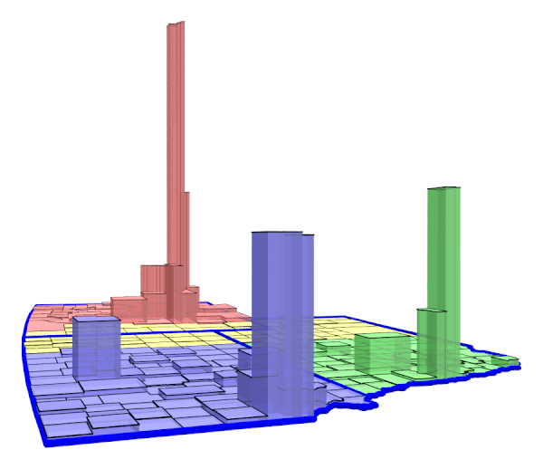

A couple of days poking around on the internet revealed a few things:
- There was existing software for generating cartograms.
- Some of it was in the form of free add-ons for commercial packages. The cost of the commercial packages was larger than the household research budget was comfortable with [1].
- Some of the available code wouldn't run on my Mac.
- There was at least one free standalone package written in Java that would run on my Mac. I disliked its graphical user interface and slow response. (That should not be construed as a slight on the developers or their code; it just wasn't right for me.)
- There was at least one of the better algorithms for contiguous cartograms with source code available from the original authors that "just" needed a wrapper to make use of it.
The first thing I needed was map data. A map like I wanted was just a set of polygons. Wikipedia to the rescue! Tucked away in the Wikimedia Commons was an SVG (Scalable Vector Graphics) file that provided polygon outlines for the 50 US states. I had used SVG on a couple of other occasions so knew that extracting the outlines only took a small chunk of Perl code. I created my own very simple format for a map file anticipating that I might want to convert from other sources in the future. It was intended to be a placeholder, but I'm still using it today.
.svg){kind=link}
I needed to draw the polygons, both outlines and filled. The GD Graphics Library has been around for a long time. GD had the advantage that it is oriented towards drawing in memory and then rendering to a file; newer alternatives were focused much more towards rendering in real time in a video frame buffer. GD is written in C, but people have written bindings to the library for many other programming languages. I do most of my programming in Perl [2], and GD.pm was readily available. When I drew the polygons from the Wikimedia file there were some problems with the data. I ended up with a "check outlines" program that did simple drawings of specified subsets of the map data so that I could identify and fix problems.
For doing the contiguous cartogram transformation, I chose the Gastner and Newman gas-diffusion density-equalization method [3]. The results were attractive and Mark Newman was distributing open source code. The cart program took an initial density file and produced an intermediate result – a representation of the transform from initial density to equalized density. The interp program used that intermediate file and a list of point coordinates – say, the points defining a polygon – and produced a list of the transformed coordinates. Draw the transformed polygons and the result is a contiguous cartogram. It wasn't quite as simple as that sounds. There were, for example, the usual kinds of problems with exactly how the different bits of software wanted their data to be formatted. Still, after a couple of weeks of part-time effort, I could draw a rough version of the cartogram shown above.

The formal study of map projections – representing the surface of a sphere, or part of that surface, on a piece of paper – is a very old subject, going back centuries. The PROJ project provided the open source program cs2cs that will translate from one coordinate system to another for almost every projection system known (or at least those in somewhat common usage). The cs2cs program made it possible to take the latitude-longitude data extracted from the shapefile and produce nicely oriented maps using an equal-area projection (second figure down).
Extreme distortion in some cartograms created its own problems. In particular, many of the lines looked pretty ratty. Solving that required a combination of adding intermediate points along the edges of the polygons and finding ways to get around the GD library's anti-aliasing restrictions. By this point there were lots of picky little details about which outlines to use where, what colors, the thickness of the lines, etc. The wrapper was accepting a lot of command-line options in order to deal with those. It still does, although it can read the options from a file in addition to any specified on the command line. The resulting cartograms seemed to be reasonably attractive even in extreme cases (third figure down).
Counties, particularly in the coastal states of the US, suffer from irregular shapes and sizes. Some western counties are larger than some eastern states. There is lots of variation even within states: California's largest county is almost 500 times the area of its smallest county. For some purposes, replacing county outlines with a uniform mesh (sometimes called a grid in the literature) provided more useful results. Getting a smooth rendition of the lines meant splines rather than line segments; the GD::Polyline module added a nice spline capability to the GD library. The result is shown in the fourth figure down.
Sometimes, particularly where there are extreme differences in density, cartograms are difficult to read to the point that they become unuseful. Prism maps are an alternative. The same basic approach – let the wrapper generate do something fairly easy and have an existing piece of software do the heavy lifting – made it straightforward to add simple prism maps. In this case, the heavy lifting was done by POV-Ray, an open source ray-tracing 3D renderer [5]. 3D rendering opens up a whole new set of parameters to play with: camera and light placement, transparency of objects, etc (fifth figure). Those can produce visually interesting results. The sixth of the several images shows an example, with the camera positioned near the base on which the prisms rest, looking slightly north of due west, Kansas City's suburbs are in purple along the near edge. Omaha and it's suburbs are in green. Wichita is a bit farther west, still in purple, and the Front Range urban corridor in Colorado is towering in the distance, hundreds of miles away, in red.
The difficulties aren't just a matter of drawing the maps. I think everyone with any experience that I've discussed the problems with would agree with the statement, "Mapping is straightforward; data is hard." Just matching up identifiers can present problems. Most of my early cartograms used Wikipedia data with states identified by postal abbreviations. County-level data was identified by name. This became a problem when I needed to combine multiple data sources. The easiest common identification scheme is FIPS codes (Federal Information Processing Standards). Even then there are problems. South Dakota – fairly recently as these things go – changed a county name, so the federal government changed the county's FIPS code. The wrapper tries to catch this and change everything to the current code.
Preparing images for actual use required standard sorts of manipulation: resizing, cropping, pasting things together either vertically or horizontally, etc. Being a command-line sort of guy, I used the NetPBM package which provides scriptable routines for most image manipulations. Releasing code into the wild requires some sort of documentation, a task I often dread. I've lost track of the number of times I've said to myself that the code was complete enough to make public, only to delay yet again.
Things didn't really happen in exactly the order described above, of course. As with most unplanned personal projects, things got added when they become desirable, and problems got fixed when they got discovered (or became obnoxious enough). The wrapper is, as I write this, about 2700 lines of Perl (including comments and vertical white space). About 2300 lines of that is real code; the remainder is a collection of look-up tables with static information that has been useful from time to time. An example of that kind of information is a Perl hash that converts two-character standard state abbreviations into the corresponding FIPS code (eg, from Florida's "FL" to "12"). The code isn't particularly well structured. The style isn't particularly consistent throughout. (What? Your coding style doesn't change at all over nine years?) A serious Perl stylist would probably be appalled by some of my abuses of the language, regardless of the Perl slogan that "There's more than one way to do it".
[1] One of the things that I frequently say about being retired: the upside is that I can choose the questions I want to study and how to structure the research; the downside is that funding is considerably more difficult. ↩
[2] Mostly for historical reasons. I have also done recent projects in Python and JavaScript, but for (what I think will be) little projects I just automatically reach for Perl. ↩
[3] "Diffusion-based method for producing density equalizing maps," Michael T. Gastner and M. E. J. Newman, Proc. Natl. Acad. Sci. USA 101, 7499-7504 (2004). ↩
[4] There really was a 51st State movement in Colorado. They were, and perhaps still are, a registered 501(c) nonprofit organization so that donations were tax deductible and they could legally lobby the state legislature. ↩
[5] Somewhat embarrassingly, I found POV-Ray when I was having trouble finding contemporary software that I thought would meet my needs – like the drawing libraries, the emphasis is on fast rendering to a frame buffer – and asked myself the question, "What software would I have used if I were doing this 20 years ago?" ↩
Next: A Small Example
Last updated Jun 28, 2021